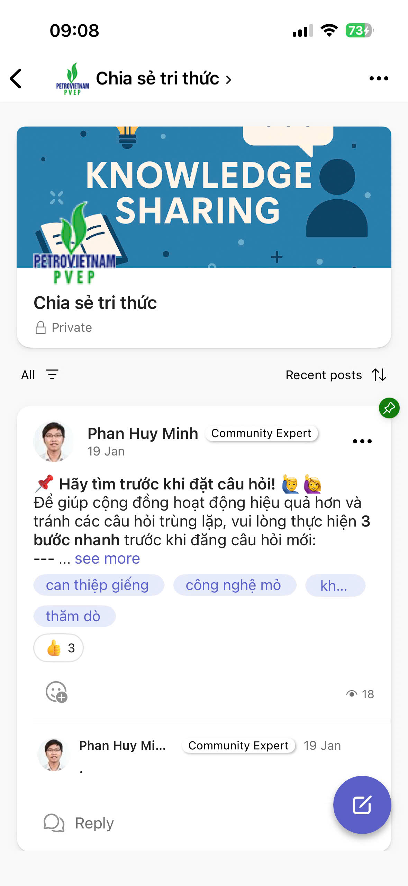

HỌC TỪ CHÍNH NHỮNG VIỆC ĐANG LÀM
Buổi học không bắt đầu bằng lý thuyết Quản lý dự án. Thay vào đó, chính các bài tập đang triển khai được nhìn như những dự án nhỏ: có mục tiêu, có phạm vi, có phân vai, có người chịu trách nhiệm và phải có sản phẩm cuối cùng.
Từ các nhiệm vụ được giao, các thành viên không chỉ dừng lại ở việc trao đổi trên lớp mà đã trực tiếp cùng nhau xây dựng, chỉnh sửa và tiếp tục hoàn thiện những sản phẩm có nội dung chuyên môn và giá trị sử dụng rõ ràng.
02 bài báo khoa học
Từ những vấn đề kỹ thuật thực tế, các nhóm đã xây dựng hai bài báo và tiếp tục hoàn thiện theo góp ý của PTGĐ: làm rõ vấn đề, tổng quan, phương pháp, kiểm chứng và giá trị ứng dụng.
SẢN PHẨM ĐANG TIẾP TỤC HOÀN THIỆNR&E Knowledge Platform
Từ nhu cầu chia sẻ kinh nghiệm và xử lý các vấn đề kỹ thuật, nhóm đã xây dựng một không gian để đặt câu hỏi, trao đổi, phản biện và lưu lại những nội dung hữu ích để những người cùng chuyên môn có thể tham khảo.
CỘNG ĐỒNG CHIA SẺ KIẾN THỨCTỪ BÀI TẬP ĐẾN MỘT SẢN PHẨM ĐƯỢC ĐẦU TƯ NGHIÊM TÚC
Theo định hướng của PTGĐ Ngô Khánh Xạ, các bài báo cần tiếp tục được hoàn thiện theo cấu trúc chặt chẽ hơn, vừa có chiều sâu kỹ thuật vừa thể hiện rõ giá trị ứng dụng thực tế.
TỪ Ý TƯỞNG CHIA SẺ ĐẾN MỘT CỘNG ĐỒNG CHUYÊN MÔN
Chia sẻ kiến thức – cùng trao đổi các vấn đề thực tế
Knowledge Platform được xây dựng như một không gian để cán bộ kỹ thuật có thể đặt câu hỏi, trao đổi các tình huống thực tế, tìm kiếm vấn đề tương tự và chia sẻ kinh nghiệm xử lý.
Từ một nhiệm vụ học tập, nhóm đã bước đầu hình thành một cộng đồng chia sẻ kiến thức, nơi mọi người có thể cùng trao đổi, phản biện và học hỏi lẫn nhau.

BA CÂU HỎI NHỎ NHƯNG RẤT THỰC TẾ
Các thành viên có đang hiểu cùng một đích đến hay mỗi người đang làm theo một cách hiểu khác nhau?
Phạm vi dự án cần được làm rõ, thay vì âm thầm làm thêm vì ngại trao đổi hoặc ngại từ chối.
Khi cần chốt phương án, dự án phải có người chịu trách nhiệm và đưa ra quyết định.
HỌC ĐƯỢC NHIỀU HƠN KHI THỰC SỰ BẮT TAY VÀO LÀM
Khi cùng nhau làm một sản phẩm thực tế, các thành viên phải thống nhất mục tiêu, phối hợp, phân công, trao đổi, tiếp nhận góp ý, chỉnh sửa và chịu trách nhiệm với kết quả cuối cùng.
Hai bài báo khoa học giúp các bạn rèn cách tiếp cận một vấn đề kỹ thuật có hệ thống hơn.
Knowledge Platform giúp các bạn thử nghiệm cách chia sẻ, trao đổi và cùng nhau xử lý các vấn đề chuyên môn.
Chính quá trình làm thật khiến những nội dung về Quản lý dự án trở nên dễ hiểu, gần với công việc và có ý nghĩa hơn.
TIẾP TỤC HOÀN THIỆN NHỮNG SẢN PHẨM ĐÃ BẮT ĐẦU
① Hoàn thiện và gửi đăng bài báo khoa học
Tiếp tục chỉnh sửa trên cơ sở góp ý của PTGĐ, chuẩn hóa cấu trúc, bổ sung nội dung cần thiết và hoàn thiện hồ sơ gửi đăng.
② Tiếp tục phát triển R&E Knowledge Platform
Mỗi nhóm lựa chọn một vấn đề thực tế, tổng hợp lại vấn đề, đề xuất hướng xử lý cụ thể và cập nhật kết quả lên cộng đồng.
③ Áp dụng cách làm việc theo dự án
Mỗi nhiệm vụ cần xác định rõ: mục tiêu, phạm vi, phân vai, người chịu trách nhiệm, mốc tiến độ và sản phẩm cuối cùng.
TÀI LIỆU BUỔI 3
Bấm vào tên tài liệu để xem.
{kind=link}
{kind=link}
Hai bài báo khoa học sẽ được bổ sung vào danh mục khi file chính thức được đưa vào thư mục Buổi 3.
Giá trị của Buổi 3
không chỉ nằm ở kiến thức Quản lý dự án.
Điều quan trọng hơn
là các thành viên đã thực sự cùng nhau làm việc,
tạo ra những sản phẩm cụ thể,
tiếp nhận góp ý,
chỉnh sửa
và tiếp tục hoàn thiện.
Học đi đôi với hành – và trưởng thành qua chính quá trình làm thật.